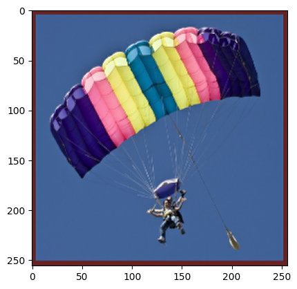
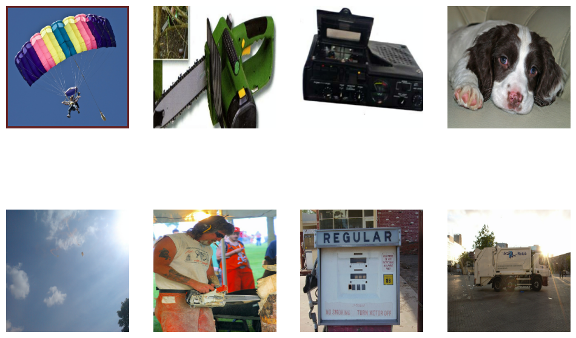
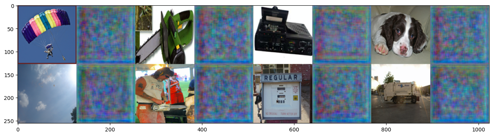

Tutorials 🙇
This tutorial demonstrate how to train VQGAN in JAX/Flax using our pipeline. For the tutorial we will train on imagenette datasets.
Note: This notebook will be re-evaluated when I get access to GPU to fully train this model, for now I am poor jobless person 😞.
0. Prepare environment
We use pdm a modern Python package and dependency manager so thanks to it one can easily reproduce our code. First you need to create virtual environment and install packages. You can do it with
python -m venv venv
pip install -r requirements.txt
Or via pdm. Firstly install pdm using this url. Then you:
pdm install
pdm install --dev
pdm run pre-commit install
Now you are all set for the working with this project hurray 🎉🎉🎉! Just remember all useful scripts are in:
pdm run --list
pdm run #run command
And if you wanna run some commands you need to pdm run <command>
# Install dependencies
%pip install -r ../requirements.txt
# you can also create virtual environment and install dependencies with
%invoke venv # recommended
1. Imports
Import OmegaConf, LoadConfig, TrainerVQGan, DataLoader, TensorflowDataset. OmegaConf is a library which will handle loading yaml file with our configs. Our pipeline is managed basically with yaml files specifying architecture, trainer, dataset loading and processing. LoadConfig is our dataclass config which will take omegaconf dict and prepare configs for training and data loading. TensorflowDataset and DataLoader are our objects for preparing datasets and creating something similar to PyTorch data loaders. Lastly TrainerVQGan is object which will take care of creating models, training them and logging.
# External libraries
# flake8: noqa: E402
import sys
from omegaconf import OmegaConf
# Internal libraries
sys.path.insert(0, "../")
from modules.config import LoadConfig
from modules.training import TrainerVQGan
from modules.utils import DataLoader, TensorflowDataset
/Users/vladimirzaigrajew/Documents/projects/jax-vqgan/myenv/lib/python3.8/site-packages/tqdm/auto.py:22: TqdmWarning: IProgress not found. Please update jupyter and ipywidgets. See https://ipywidgets.readthedocs.io/en/stable/user_install.html
from .autonotebook import tqdm as notebook_tqdm
WARNING:absl:GlobalAsyncCheckpointManager is not imported correctly. Checkpointing of GlobalDeviceArrays will not be available.To use the feature, install tensorstore.
2. Load configs
Now lets load our training configs. For now we created three sample configs located in conf folder:
- config.yaml my training config
- imagenet.yaml official training config for training on imagenet dataset
- gumbel.yaml official training config with Gumbel-max trick on imagenet dataset
You can create your own config if you want to but for this tutorial we will use config.yaml.
config_path = "../conf/config.yaml"
cfg_omega = OmegaConf.load(config_path)
print(OmegaConf.to_yaml(cfg_omega))
train:
model_name: vqgan_imagenette
model_hparams:
embed_dim: 256
n_embed: 1024
double_z: false
z_channels: 256
in_channels: 3
out_ch: 3
ch: 128
ch_mult:
- 1
- 1
- 2
- 2
- 4
act_name: gelu
num_res_blocks: 2
attn_resolutions:
- 16
dropout: 0.0
disc_hparams:
input_last_dim: 3
save_dir: ../../datasets/vqgan_model_save
log_dir: ../../datasets/vqgan_log_dir
check_val_every_n_epoch: 1
log_img_every_n_epoch: 5
input_shape:
- 256
- 256
- 3
codebook_weight: 1.0
monitor: total_loss
recon_loss: l1
disc_loss: hinge
disc_weight: 0.8
num_epochs: 10
dtype: float32
distributed: false
seed: 42
optimizer:
_target_: optax.adamw
learning_rate: 4.5e-06
b1: 0.9
b2: 0.999
weight_decay: 0.0001
optimizer_disc:
_target_: optax.adamw
learning_rate: 4.5e-06
b1: 0.9
b2: 0.999
weight_decay: 0.0001
disc_start: 7
temp_scheduler: null
data:
train_params:
batch_size: 4
shuffle: true
test_params:
batch_size: 8
shuffle: false
dataset_name: imagenette
dataset_root: ../../datasets
transform:
__version__: 1.3.0
transform:
__class_fullname__: Compose
additional_targets: {}
bbox_params: null
keypoint_params: null
p: 1.0
transforms:
- __class_fullname__: RandomBrightnessContrast
always_apply: false
brightness_by_max: true
brightness_limit:
- -0.1
- 0.1
contrast_limit:
- -0.2
- 0.2
p: 0.5
- __class_fullname__: HorizontalFlip
always_apply: false
p: 0.5
size: 256
We see that we have two sections train which corresponds to setting trainer and architectures and data specifying datasets, augmentation and preprocessing.
cfg_omega_dict = OmegaConf.to_container(cfg_omega)
cfg_omega_dict["train"]["num_epochs"] = 1 # reduce number of epochs for testing
cfg = LoadConfig(**cfg_omega)
print(cfg)
LoadConfig(train=TrainConfig(model_name='vqgan_imagenette', model_hparams=VQGANConfig {
"act_name": "gelu",
"attn_resolutions": [
16
],
"beta": 0.25,
"ch": 128,
"ch_mult": [
1,
1,
2,
2,
4
],
"double_z": false,
"dropout": 0.0,
"embed_dim": 256,
"give_pre_end": false,
"gumb_temp": 1.0,
"in_channels": 3,
"kl_weight": 0.0005,
"n_embed": 1024,
"num_res_blocks": 2,
"num_resolutions": 5,
"out_ch": 3,
"resamp_with_conv": true,
"resolution": 256,
"transformers_version": "4.24.0",
"use_gumbel": false,
"z_channels": 256
}
, disc_hparams=DiscConfig {
"input_last_dim": 3,
"n_layers": 3,
"ndf": 64,
"output_last_dim": 1,
"resolution": 256,
"transformers_version": "4.24.0"
}
, save_dir='../../datasets/vqgan_model_save', log_dir='../../datasets/vqgan_log_dir', check_val_every_n_epoch=1, log_img_every_n_epoch=5, input_shape=(256, 256, 3), codebook_weight=1.0, monitor='total_loss', recon_loss='l1', disc_loss='hinge', disc_weight=0.8, num_epochs=10, dtype=<class 'jax.numpy.float32'>, distributed=False, seed=42, optimizer=GradientTransformation(init=<function chain.<locals>.init_fn at 0x7fb5569c9e50>, update=<function chain.<locals>.update_fn at 0x7fb5569c9f70>), optimizer_disc=GradientTransformation(init=<function chain.<locals>.init_fn at 0x7fb5569e6310>, update=<function chain.<locals>.update_fn at 0x7fb5569e63a0>), disc_start=7, temp_scheduler=None), data=DataConfig(train_params=DataParams(batch_size=4, shuffle=True), test_params=DataParams(batch_size=8, shuffle=False), dataset_name='imagenette', dataset_root='../../datasets', transform={'__version__': '1.3.0', 'transform': {'__class_fullname__': 'Compose', 'additional_targets': {}, 'bbox_params': None, 'keypoint_params': None, 'p': 1.0, 'transforms': [{'__class_fullname__': 'RandomBrightnessContrast', 'always_apply': False, 'brightness_by_max': True, 'brightness_limit': [-0.1, 0.1], 'contrast_limit': [-0.2, 0.2], 'p': 0.5}, {'__class_fullname__': 'HorizontalFlip', 'always_apply': False, 'p': 0.5}]}}, size=256))
Now if you look more closely and compare two outputs you will see some inequalities, because LoadConfig does some preprocessing and instantiating some objects.
3. Prepare datasets and dataloaders
Having our train and data configs now lets create datasets and dataloaders.
print(cfg.data)
DataConfig(train_params=DataParams(batch_size=4, shuffle=True), test_params=DataParams(batch_size=8, shuffle=False), dataset_name='imagenette', dataset_root='../../datasets', transform={'__version__': '1.3.0', 'transform': {'__class_fullname__': 'Compose', 'additional_targets': {}, 'bbox_params': None, 'keypoint_params': None, 'p': 1.0, 'transforms': [{'__class_fullname__': 'RandomBrightnessContrast', 'always_apply': False, 'brightness_by_max': True, 'brightness_limit': [-0.1, 0.1], 'contrast_limit': [-0.2, 0.2], 'p': 0.5}, {'__class_fullname__': 'HorizontalFlip', 'always_apply': False, 'p': 0.5}]}}, size=256)
Config for data have information about train and test datasets, size of the images and augmentations which will be used with albumentations frameworks
print(f"In train config we have information about data datatype. We use {cfg.train.dtype}")
dataset_train_class = TensorflowDataset(train=True, dtype=cfg.train.dtype, config=cfg.data)
dataset_test_class = TensorflowDataset(train=False, dtype=cfg.train.dtype, config=cfg.data)
In train config we have information about data datatype. We use <class 'jax.numpy.float32'>
Let`s look on data.
# Framework for visualization
from matplotlib import pyplot as plt
%matplotlib inline
from modules.utils import post_processing
dataset = dataset_test_class.get_dataset()
dataset_iter = iter(dataset)
data = next(dataset_iter)
print(f"Our data have shape: {data.shape} and data type: {data.dtype}")
Our data have shape: (256, 256, 3) and data type: <dtype: 'float32'>
2022-11-23 14:40:16.429179: W tensorflow/core/kernels/data/cache_dataset_ops.cc:856] The calling iterator did not fully read the dataset being cached. In order to avoid unexpected truncation of the dataset, the partially cached contents of the dataset will be discarded. This can happen if you have an input pipeline similar to `dataset.cache().take(k).repeat()`. You should use `dataset.take(k).cache().repeat()` instead.
We need to post process data because our data for modal is standardized and normalized.
data_postprocessed = post_processing(data.numpy())
plt.imshow(data_postprocessed)
plt.show()

Now let's look at dataloader data
print(
f"We use again information from train config about distributed training:{cfg.train.distributed}"
)
loader_train = DataLoader(dataset=dataset_train_class, distributed=cfg.train.distributed)
loader_val = DataLoader(dataset=dataset_test_class, distributed=cfg.train.distributed)
We use again information from train config about distributed training: False
dataloader_iter = iter(loader_val())
data = next(dataloader_iter)
print(f"Our data have shape: {data.shape} and data type: {data.dtype}")
Our data have shape: (8, 256, 256, 3) and data type: float32
2022-11-23 14:40:20.057526: W tensorflow/core/kernels/data/cache_dataset_ops.cc:856] The calling iterator did not fully read the dataset being cached. In order to avoid unexpected truncation of the dataset, the partially cached contents of the dataset will be discarded. This can happen if you have an input pipeline similar to `dataset.cache().take(k).repeat()`. You should use `dataset.take(k).cache().repeat()` instead.
data = data[:8]
data_postprocessed = [post_processing(img) for img in data]
fig, axs = plt.subplots(2, 4, figsize=(12, 8))
for i, ax in enumerate(axs.flat):
ax.imshow(data_postprocessed[i])
ax.axis("off")
plt.show()

4. Prepare train module
You don't need to create architecture, inicialize it etc. Because for doing it we have our trainer TrainerVQGan. There we have prepared training, logging to Tensorboard and checkpointing it. Additionaly pmaping and jiting we also took care of it for you. THANK YOU 😤.
model = TrainerVQGan(module_config=cfg.train)
5 Let`s start trining ✊
model.train_model(loader_train, loader_val)
6. What now we can do
You can now save model, but we always save model when we gat better results. You can also load model.
if model.checkpoint_exists():
model.load_model()
One can also see tensorboard results
%reload_ext tensorboard
%tensorboard --logdir cfg.train.log_dir --host localhost --port 8888
7. Lets look at the model
Now lets take the model and look at the samples
# external libraries
import jax
import numpy as np
# internal libraries
from modules.utils import make_img_grid
# Prepare data
dataloader_iter = iter(loader_val())
data = next(dataloader_iter)
data = data[:8]
2022-11-23 14:54:33.304669: W tensorflow/core/kernels/data/cache_dataset_ops.cc:856] The calling iterator did not fully read the dataset being cached. In order to avoid unexpected truncation of the dataset, the partially cached contents of the dataset will be discarded. This can happen if you have an input pipeline similar to `dataset.cache().take(k).repeat()`. You should use `dataset.take(k).cache().repeat()` instead.
# Generate images
reconst_imgs = model.model(data)[0]
reconst_imgs = jax.device_get(reconst_imgs)
# Plot and add to tensorboard
imgs = np.stack([data, reconst_imgs], axis=1).reshape(-1, *data.shape[1:])
imgs = np.stack([post_processing(img, resize=128) for img in imgs], axis=0)
img_to_log = make_img_grid(imgs, nrows=2)
plt.figure(figsize=(16, 12))
plt.imshow(img_to_log)
plt.show()

Congrats 👏👏👏! You made it to the end of the training example. You can revisit the same example, but structured differently as a couple of Python modules, test modules, config files, another Colab, and documentation in Git repo:
https://github.com/WolodjaZ/jax-vqgan/blob/main/notebooks/example.ipynb